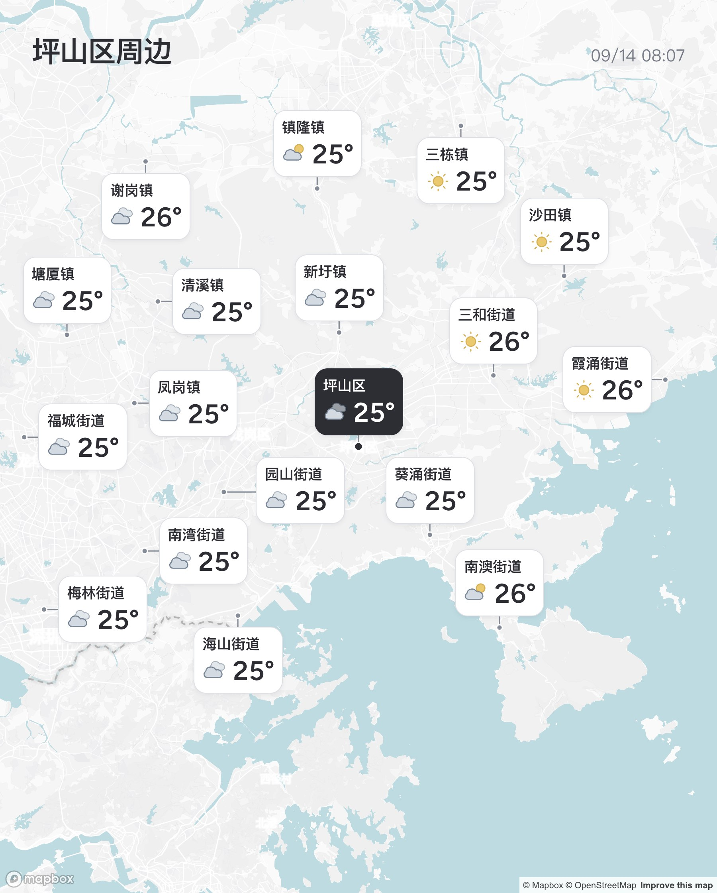
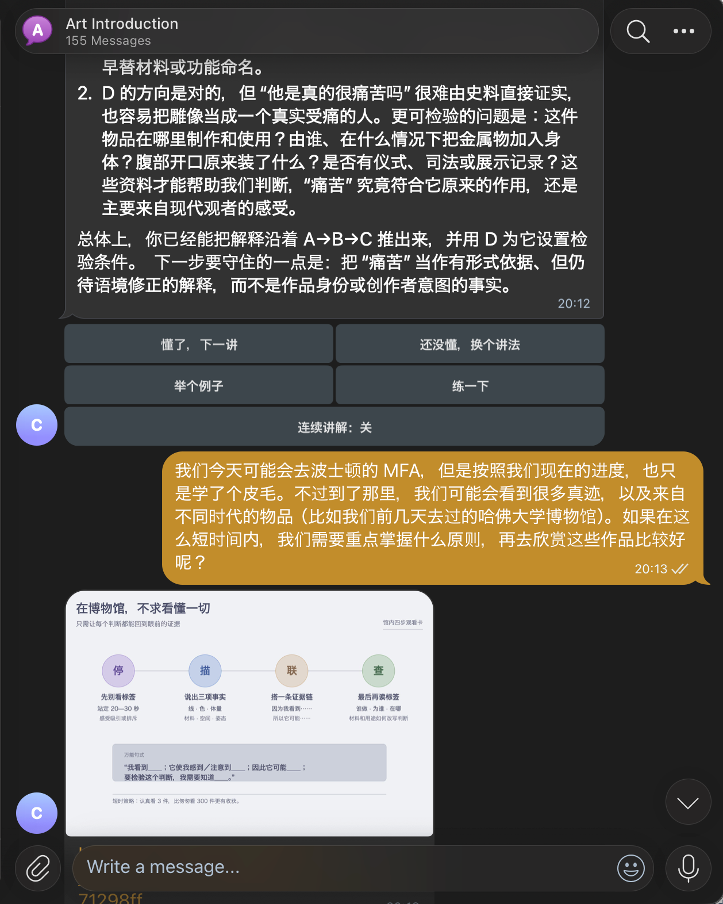
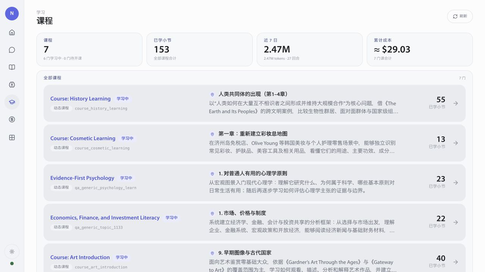
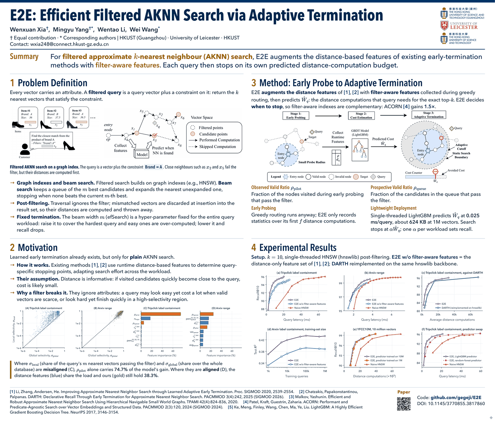
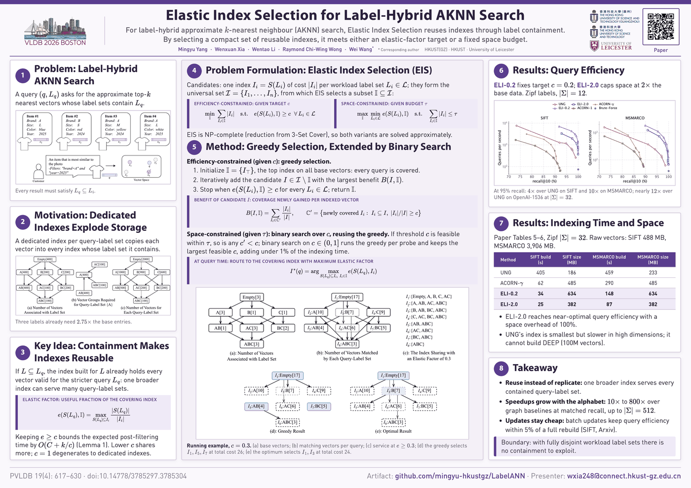

E2E: Efficient Filtered AKNN Search via Adaptive Termination
Wenxuan Xia†, Mingyu Yang†*, Wentao Li, Wei Wang*.
ACM SIGKDD Conference on Knowledge Discovery and Data Mining, 2026. DOI Paper Code
PhD student in Data Science and Analytics
I am a PhD student at The Hong Kong University of Science and Technology (Guangzhou). My research focuses on efficient vector search and data systems, particularly approximate nearest-neighbor search, filtered search, and graph-based vector indexes.
Outside research, I enjoy building personal agent systems and small tools for learning, research, and everyday workflows.
PhD in Data Science and Analytics, September 2024 to present
Advisor: Wei Wang
BEng in Software Engineering, September 2019 to July 2023
Undergraduate thesis advisor: Jianbin Qin
GPA: 4.21/4.5; ranked first in the major.
Wenxuan Xia†, Mingyu Yang†*, Wentao Li, Wei Wang*.
ACM SIGKDD Conference on Knowledge Discovery and Data Mining, 2026. DOI Paper Code
Mingyu Yang, Wenxuan Xia, Wentao Li, Raymond Chi-Wing Wong, Wei Wang*.
Proceedings of the VLDB Endowment, 19(4): 617–630, VLDB 2026. DOI Paper Code
Wenxuan Xia, Mingyu Yang, Wentao Li, Wei Wang.
I maintain a private fork of NanoClaw as a personal AI assistant, extensively customizing its runtime and building new tools to support my daily routines and learning. I also use this project to explore software development in the agentic era, using Claude Code, Codex, and agent teams to build and maintain a continuously running agent system.



I am fascinated by typography. I am not a professional designer, but I am honored to have had the chance to design the posters for our papers.


Teaching assistant at HKUST(GZ):